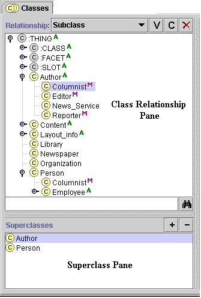

The Superclasses pane, in the lower left in the Classes tab, displays all the superclasses of the class currently selected in the Class Relationship Pane. This pane allows you to add and remove superclasses for a class, as well as to jump to another superclass in the Class Relationship pane and highlight a different occurrence of the same class.
Note: If you cannot see the Superclasses Pane, your window may be too small. You can see the pane by enlarging your window or by dragging the slider bar at the bottom of the Class Relationship Pane. See Working With a Small Window for more information.

To see a list of all superclasses of a given class, highlight any occurance of the class in the Class Relationship pane. The Superclasses pane automatically displays a list of all of the superclasses of the selected class.
To add a superclass to the selected class, click the Add  button, highlight the class you want as an additional superclass in the Select Class
window, and then click OK. See Adding a Superclass
for more information.
button, highlight the class you want as an additional superclass in the Select Class
window, and then click OK. See Adding a Superclass
for more information.
To remove a superclass from the list of superclasses for the selected class, highlight the superclass you want to remove and click the Remove button. The superclass/subclass relationship is broken, but the superclass is not deleted from the knowledge base. See Removing a Superclass for more information.
To jump to a different superclass in the Class Relationship Pane, click on any superclass in the Superclasses pane. The highlight in the Class Relationship pane automatically moves to the occurrence of the class which is directly under the chosen superclass. If the occurrence is not currently visible in the Class Relationship pane, Protégé automatically scrolls to the correct location and expands the hierarchy to make the class visible. See Jumping to Another Superclass for more information.
Next: The Class Form